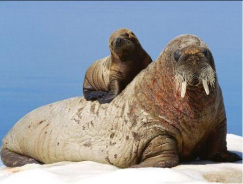
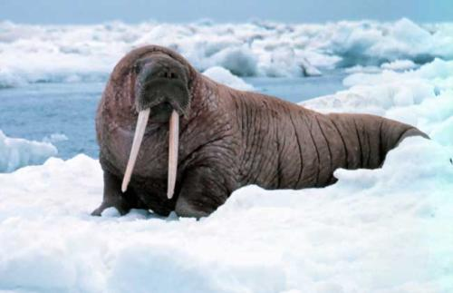
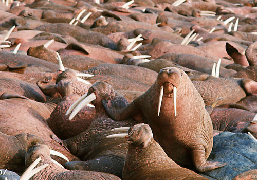

身体呈圆筒形，粗壮而肥胖，雄兽体长3.3~4.5米，体重1200~3000千克，雌兽较小，体长一般为2.9~3.3米，体重600~900千克。头部扁平，吻端较钝，上唇的周围长有一圈又长又硬的钢髯，约有400多根，其中有血管和神经通过，触觉十分灵敏。颈部有一对气囊，使头部能够经常露在水面以上进行以呼吸。眼睛很小。没有外耳壳。肉乎乎的四肢颇似鱼鳍，所以称为鳍脚。前肢较长，约占体长的四分之一，5趾分得很开，后肢能向前方折曲，可以在陆地或冰上爬行或支撑身体。尾巴很短，隐藏在臀部后面的皮肤中。雄兽的睾丸位于腹腔内。
海象有24枚或少于24枚牙齿，下门齿消失，前臼齿和臼齿的顶部平坦，适于敲开贝壳。最独特的是一对白色的上犬齿十分发达，终生都在不停地生长，其根部着生于上颔，尖部从两边的嘴角垂直伸出嘴外，形成獠牙，很像陆生动物大象的门齿，并因此而得名。雄兽的长牙可达75~96厘米，重量为4~4.5千克。雌兽的牙稍短而细，长度一般不到50厘米。獠牙可以用于自卫和争斗，在泥沙中掘取蚌蛤、虾蟹等食物，或在爬上冰块时支撑身体，所以又有“象牙拐杖”之称。在冰封的海下，獠牙还能用来凿开冰洞，以便呼吸。
海象的皮肤厚而多皱，厚度可达1.2~5厘米，皮下脂肪厚12~15厘米，足以抵御北极的严寒。裸露无毛的体表一般呈灰褐色或黄褐色，但常常出现一些奇妙的变化。在冰冷的海水中浸泡一段时间后，为了减少能量消耗，动脉血管收缩，血液流动受到了限制，体表就变为可怕的灰白色，而登陆以后，血管膨胀，体表则呈现出棕红色，尤其是一群海象卧伏在一起的时候，就如同铺在岩石上的一块巨大的棕红色地毯。
海象主要生活在北极或近北极的温带海域
海象是群栖性的动物，在冰冷的海水中和陆地的冰块上过着两栖的生活，每群可从几十只、数百只到成千上万只。为了恢复在海洋中长期游动后的疲劳，在陆地上大多数时间是睡觉和休息，有时用獠牙与较短的后肢来摇摇晃晃地行走，显得十分笨拙，滑稽可笑。但在海水中靠着流线型的身体、发达的肌肉以及强有力的鳍状肢，则行动自如，非常机敏，用后肢推进，前肢转弯，时速达24公里，可潜至70米以下的深度，能够完成取食、求偶、交配等各种活动。视觉较差，但嗅觉与听觉却颇为敏锐。群体在睡觉时总会留下一只放哨，发现有危险来临时，便立即发出公牛似的吼声，将同伴唤醒，或用獠牙碰醒身旁的其他个体，并依次传递临危警报。如果群体较大，放哨的还常常在水里游动，不断探出头来监视周围的情况。它的天敌主要是北极熊，常常捕食幼仔，但较少进攻身躯庞大的成体。另一个主要天敌是号称“海中霸王”的虎鲸，如果相遇，海象只能急速地逃到陆地上，使不能登陆的虎鲸毫无办法。
海象喜欢在浅海沿岸，软体动物较为丰富的砂砾底质处觅食，吻部的硬髭可用来帮助探触淤泥中的食物。海象的食性较杂，但不吃鱼，主要以瓣鳃类软体动物为食，也捕食乌贼、虾、蟹和蠕虫等，有时也偶尔吞食少量水中幼嫩植物和海底的有机质沉渣等。它先将长牙插入海底，摆动头部来翻动海底的泥沙，利用敏感而灵活的鼻口部和能像触角一样活动的触须去探找食物，然后用前肢内侧表面粗糙的掌面相对，夹住贝壳，将其磨碎，同时身体上浮一段后，松开掌面，使碎贝壳与贝肉分离开来，然后再次下潜，将下落较慢的贝肉吸人口中。据说偶尔也捕食海豹或一角鲸，但不是以其强大的獠牙作武器，而是用前肢将对方抱住，压倒水下淹死后再慢慢吃掉。
海象的大部分时光是在沿岸陆地或浮冰上度过的，在那里繁殖、换毛和休息，常常是成千上万只紧紧地挤在一起，彼此相依，有的不停地用鳍肢磨擦身体来驱赶身上的寄生虫，既使在睡眠中也不停息。偶尔有几只发生争吵时，就像水中的涟漪一样，在大群种传播开去，引起骚动和不安，獠牙、鳍脚乱舞，吼声一片。
每只雄兽都拥有众多的雌兽，到了繁殖季节，就在海滩上建立自己的领地，最好的位置被最强壮的雄兽占据，地位较低的只能在海滩的尽头找上一个位置，有的只好被迫伏卧在海中的礁石上面。领地并没有岩石等物作为地形标志，而且受雄兽所占有的雌兽数量的多少而伸缩变化。当其他雄兽闯入时，便会发生激烈的争斗，互相用獠牙和强有力的脖子进行攻击，直到分出胜负，所以雄兽身上常常伤痕累累。繁殖群组成以后，就不再发生大的变化。雄兽求偶时常在水中翻滚，发出~阵阵奇妙而和谐的声音，与鲸类喧闹的信号声很相似。
雌兽每3年产一胎，妊娠期为11~13个月，每胎只产1仔。幼仔于4~6月产于海滩上，初生时体长为1~1.2米，体重为40~50千克，体表有稀疏的黄褐色短毛，但皮下脂肪层不厚。海象乳中的脂肪成分高达45%，但糖分极少，哺乳期长达18~24个月。雌兽与幼仔的眷恋性很强，若幼仔遇到危险，雌兽就会前往营救，甚至去攻击船只，或与凶猛的北极熊搏斗。如果幼仔受伤，雌兽就用前肢抱住，放到安全的地方。断乳后的幼仔也并不马上离去，而要跟雌兽再生活一段时间，这主要是由于幼仔的獠牙还未长到足够长度，无法像成体那样进行捕食。2年以后，当幼仔的体长超过2.5米，体重达到500千克时，才离开雌兽，开始独立生活。雌兽也便又有机会开始下一次的繁殖。雄兽的性成熟年龄为6~8岁，但雌兽5岁即可产仔。寿命为30~40年。